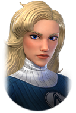

Annihilus est la récompense de la 9ème dark dimension. Mais les 3 membres du conseil galatique se débloquent dans les 3 premiers chapitres de sa saga. Pour les débloquer et avoir leurs 7 étoiles rouges je vous conseille :
Chapitre 1

Chapitre 2
Chapitre 3